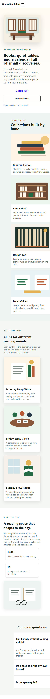
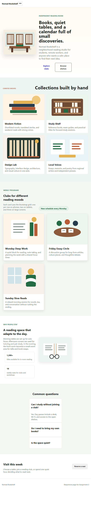
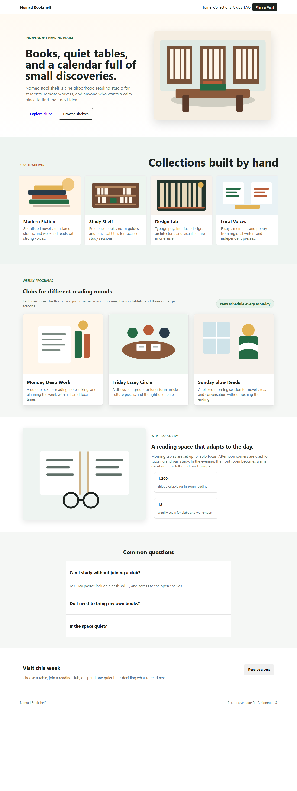

The "Curated shelves" section was built with my own CSS only. I used CSS Grid and mobile-first media queries. On a phone the collection cards appear in one column. At 768px the grid changes to two columns, and at 1100px it changes to four columns. The heading size and section spacing also increase at wider breakpoints.
The rest of the page uses Bootstrap 5.3 from the CDN. The navbar collapses on small screens and links to page sections. The hero section uses Bootstrap columns and ordering so the image and text stack on phones and align side by side on laptops. The club cards use col-md-6 and col-lg-4, so they become one card per row on phones, two on tablets, and three on larger screens.
Bootstrap components used: navbar, cards, accordion, and modal.
| Criterion | Media queries by hand | Bootstrap grid |
|---|---|---|
| Amount of code | I wrote custom rules for the collection grid, cards, images, and breakpoints. | I used Bootstrap classes like container, row, col-md-6, and col-lg-4, so less CSS was needed. |
| Control over design | I had full control over exact spacing, card behavior, and breakpoint changes in the handmade section. | Bootstrap was faster, but the layout follows Bootstrap's existing grid and utility system. |
| Speed of work | It took more time because every responsive rule had to be planned and tested. | It was quicker because common responsive patterns were already built into Bootstrap. |
| Ease of changes | Small visual changes are easy, but layout changes require editing CSS media queries. | Changing column behavior is simple by changing classes such as col-md-6 or col-lg-4. |
I would choose handmade media queries when I need a unique layout or more control over the exact design. I would choose Bootstrap when I need to build a clean responsive page quickly with standard sections like navbars, cards, accordions, and modals.



In this assignment I practiced building a responsive page in two ways. I learned how mobile-first CSS media queries give precise control, and how Bootstrap makes common responsive layouts much faster to build.